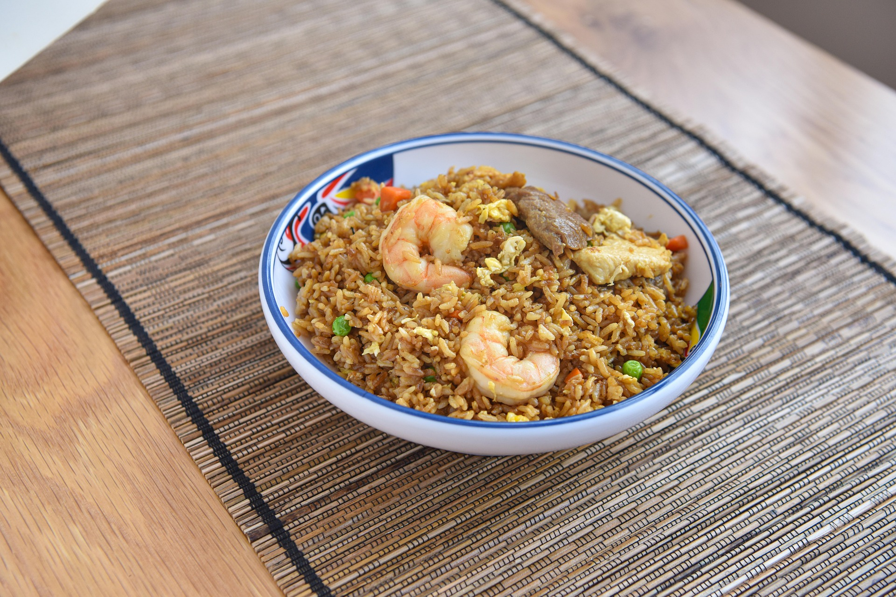

Fried rice
Home

Description
A delicious, Chinese inspired fried rice to satisfy your deepest cravings for greasy, salty goodness.
Ingredients
- 2 cups boiled white rice
- 200g protein of choice (tofu, seitan, prawns, or chicken)
- 1 onion
- 1 bell pepper
- 200g mushrooms
- 1 courgette
- 2 eggs
- 2 garlic cloves, sliced
- 1 tbsp fresh ginger, sliced
- 2 tbsp soy sauce
- 2 tbsp fish sauce
- 2 tsp Chinese 5 spice seasoning
- 2 tsp MSG
- Chili paste to taste
- 2 tbsp coriander, chopped
- 2 tbsp spring onion, chopped
- Neutral (e.g. sunflower seed) oil, more than you think
Steps
- Heat oil in pan to medium heat
- Add garlic and ginger, fry until brown
- While frying, dice the onions
- Add onions, fry until soft and slightly browning
- Meanwhile dice the bell pepper, mushrooms, and courgette
- Add courgette, wait until it softens, then add the bell pepper and mushrooms
- Add soy sauce, fish sauce, 5 spice, chili and MSG
- Add protein of choice, if chicken or prawns, let cook until done, stirring appropriately
- Push everything to the side of the pan, add the eggs and scramble
- Stir in the rice bit by bit, add more oil
- Taste and add more soy, fish sauce, or 5 spice as necessary, fry until sauce unifromly absorbed by the rice
- Serve garnishing with coriander and spring onion
Notes
If using chicken or prawn, these can be pre-fried to speed up step 8.